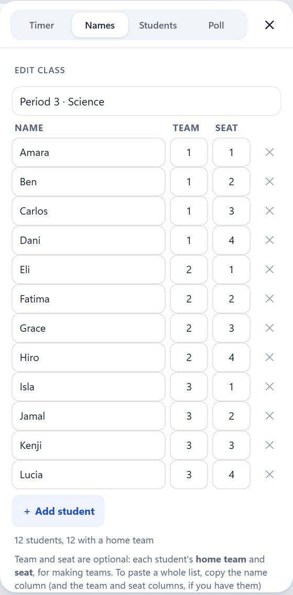
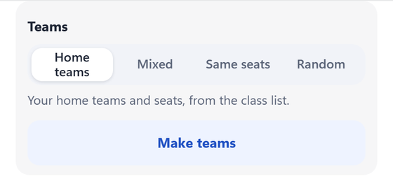
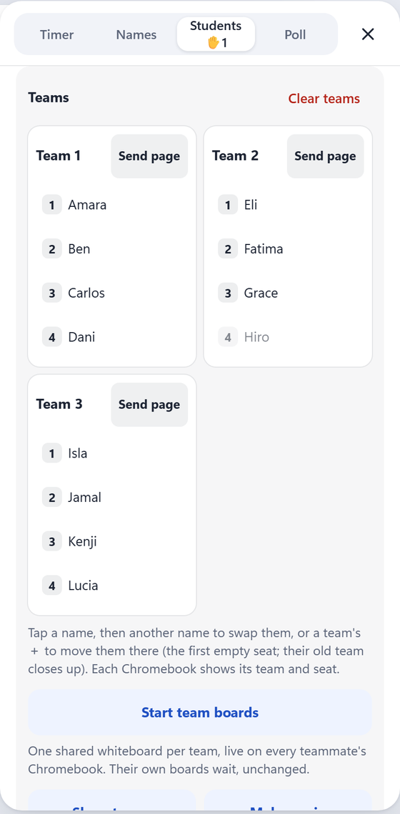
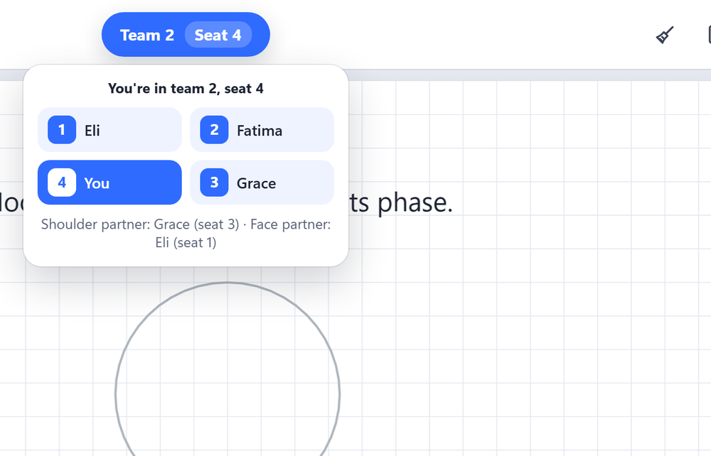
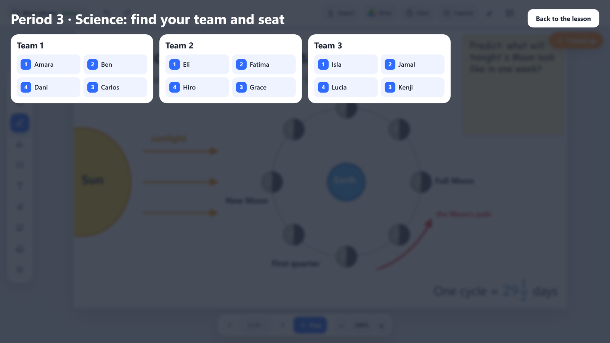
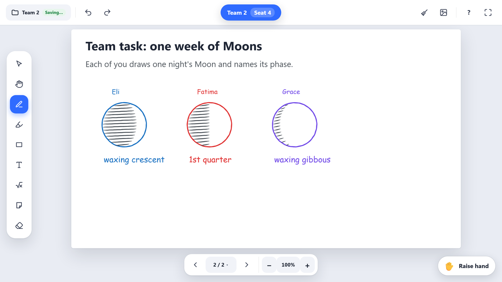
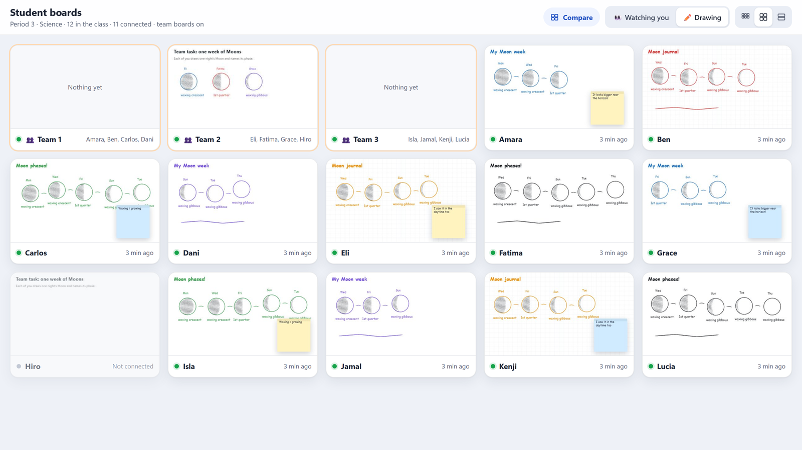
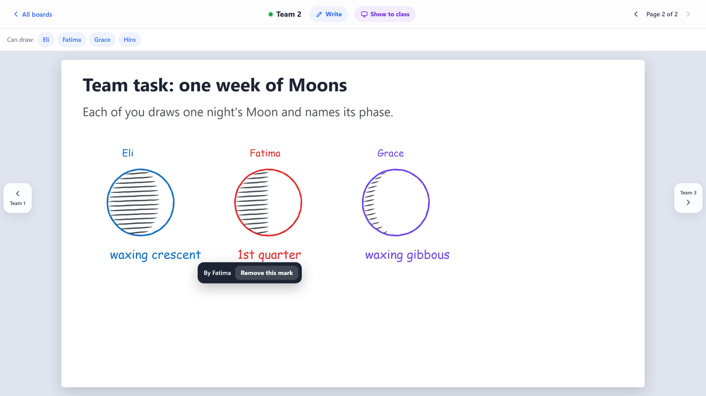

Guide › Teams
Teams
Put the class into teams of four in one tap. Every student sees their team, seat and partners, and each team can share one whiteboard.
1. Teams and seats in your class list
If your students already sit in teams, add each one's team and seat number to your class list (Class tools → Names → Edit). Both are optional; names alone still work.

- From a spreadsheet: copy the name, team and seat columns together and paste them into a name box. Every row fills in.
- Seats 1 to 4 go around the table. Seats 1 and 2 are shoulder partners (side by side), and so are 3 and 4. Seats 1 and 4 are face partners (across the table), and so are 2 and 3.
- Not sure how to number seats? Tap What do the seat numbers mean? in the class list for one common way.
- If two students in a team have the same seat, PadLink points it out before saving.
2. Make teams
Open the class first (see Students). Then Class tools → Students → Teams, choose how, and tap Make teams.

- Home teams: the teams and seats in your class list.
- Mixed: new teammates from different home teams. Everyone keeps their seat number, so each new team is as balanced as your home teams.
- Same seats: all the 1s together, all the 2s together, and so on.
- Random: teams and seats by chance. Tick Keep tablemates apart to split up students who usually sit together.
Teams are fours. If the class doesn't divide evenly, one extra student makes a team of 5, two extras make two teams of 3, and three extras make a team of 3. A student who joins later goes to their home team (or the smallest team).
3. Swap or move students

- Swap two students: tap a name, then another name. They swap teams and seats.
- Move a student: tap their name, then another team's ＋. They take the first empty seat there, and their old team closes up so no seat is left empty.
4. What students see
Each student's screen shows their team and seat at the top, like Team 2 · Seat 4. Tapping it shows their table, with their shoulder and face partners. It opens by itself whenever their team or seat changes.

Students see only their own team.
5. Show the teams and send pages
Show teams puts every team, as a table of seats, over the whiteboard, so everyone can find their place. Back to the lesson puts it away.

Send page beside a team sends the whiteboard page you're on to that team only. Handy for a different task for each team.
6. Team boards
Tap Start team boards to give each team one shared whiteboard. Every teammate's screen switches to it, and they all see each other's work live.

- Each student can change or erase only their own marks. Teammates' marks are locked.
- To keep things fair, students can't add or delete pages, clear the page, change the paper or paste pictures on a team board.
- Send page (for one team) adds your page to the team boards: a great way to hand out a team task.
- Students' own boards wait, unchanged, until team boards end.
7. Watch and help each team
In See their boards, each team board has its own card, first in the grid, with its members' names.

Click a team's card to look closer. It works like a student's board (see Students): Write on it (every teammate sees your marks at once), or Show to class.

- Who drew that? Tap any mark to see who made it, like By Fatima. Only you see this.
- Remove this mark takes it off the team board for everyone.
- Tap a member's name at the top to make them view only: they can watch their team's board but not draw. Tap again to let them draw.
8. Ending teams
- End team boards sends everyone back to their own board, just as they left it. The team boards stay until the class closes, so you can start them again.
- Make again makes new teams; Clear teams ends them.
- Teams last for the lesson. Closing the class ends them and deletes the team boards.